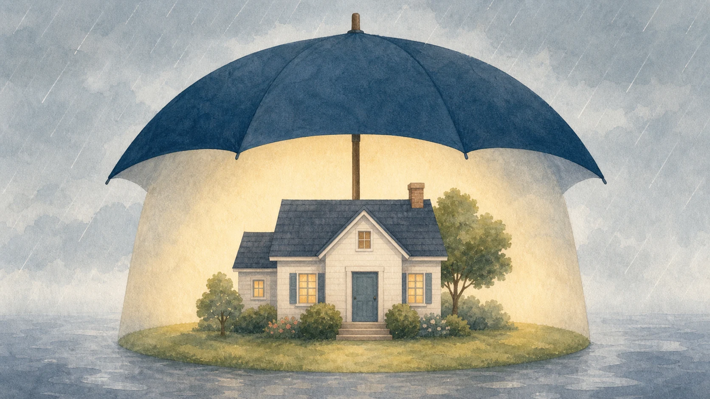

「うちには大した財産がないから、相続の備えは必要ない」と言えるかどうかは、財産額だけでは判断できません。この記事では、相続を「亡くなった後の手続き」としてではなく、元気なうちに家族で住まいの希望を聞いておくテーマとして捉え直し、家を持つ人が知っておきたい相続の基本的な考え方を紹介します。
1. 財産額だけで備えの要否を決めない
最高裁判所が公表する司法統計によると、令和7年に家庭裁判所で認容または調停成立した遺産分割事件（「分割をしない」を除く）のうち、遺産価額が1,000万円以下だった事件は全体の約35.3％、5,000万円以下まで含めると約77.6％でした。
この統計は、家庭裁判所で認容または調停成立した遺産分割事件の内訳を示すもので、相続全体で争いが起きる確率を示すものではありません。遺産価額5,000万円以下の事案も含まれていることから、財産額だけで備えの要否を決めず、家をどのように引き継ぐかを家族で確認しておくことが大切です。

2. お金は分けられても、家は分けにくい
現金や預貯金は、相続人の間で金額を調整しながら分けることができます。しかし、実家などの不動産は物理的に分割することが難しく、次のような選択を迫られることになります。
- 相続人の一人がその家に住み続け、他の相続人には代わりに現金などを渡す（代償分割）
- 家を売却して、その代金を相続人で分ける（換価分割）
- 相続人全員の共有名義にする
とくに共有名義にする方法は、一見公平に見えますが、将来的に誰か一人が売却や活用を望んでも、物件全体の売却などでは他の共有者全員の同意が必要になるなど、後々の判断を複雑にすることがあります。「家」という財産の特性そのものが、相続を難しくする要因の一つなのです。
3. 仲のよい兄弟姉妹でも意見が分かれる
兄弟姉妹の関係が良好でも、相続では、それぞれの生活状況やこれまでの経緯によって意見が分かれる場合があります。たとえば、実家の近くに住んで親の介護を担ってきた人と、遠方で独立した生活を送ってきた人とでは、実家に対する思い入れや、公平さの感じ方が異なることがあります。
これは誰が悪いという話ではなく、立場によって事情や公平さの捉え方が異なる場合があるということです。だからこそ、感情的な対立が深まる前に、早い段階で希望をすり合わせておくことが重要になります。
4. 元気なうちに聞いておきたい家の希望
相続の話し合いを、親が亡くなった後に初めて行うのではなく、元気なうちに家族で進めておくことには大きな意味があります。具体的には、次のような点を確認しておくとよいでしょう。
- この家に、将来的に誰かが住み続ける予定はあるか
- 親自身は、この家をどうしたいと考えているか（住み続けたい、売ってもよい、誰かに継いでほしいなど）
- 家以外の資産（預貯金、生命保険など）の大まかな状況
こうした対話は、税金の話や遺言書の作成を急かすものではなく、「家族としてどうしたいか」を確認する場として位置づけると、話しやすくなります。
生前贈与を活用する方法も選択肢の一つとして挙げられます。令和5年度税制改正で相続時精算課税制度に年110万円の基礎控除が創設され、2024年1月1日以後の贈与から適用されています。ただし、生前贈与が一律に有利というわけではなく、家族構成や資産状況によって最適な方法は異なるため、個別の判断は専門家への相談が必要です。
5. 相談内容に合う専門家を選ぶ
相続に関する相談先は、内容によって適した専門家が異なります。
- 税理士：相続税の試算、生前贈与の税務上の取り扱いなど、税金に関する相談。
- 司法書士：不動産の相続登記など、名義変更の手続きに関する相談。
- 弁護士：相続人間で意見が対立し、話し合いがまとまらない場合の相談。
相談内容が複数の分野にまたがる場合は、一人の専門家だけで完結させようとせず、必要に応じてほかの専門家と連携できる相談先を確認しましょう。
6. 相続前の対話が選択肢を増やす
相続は、亡くなった後の手続きだけでなく、元気なうちに希望を確認しておけるテーマでもあります。「うちは大丈夫」と決めつけず、家という分けにくい財産をどうするか、家族で一度話してみることが、将来の選択肢を整理する第一歩になります。